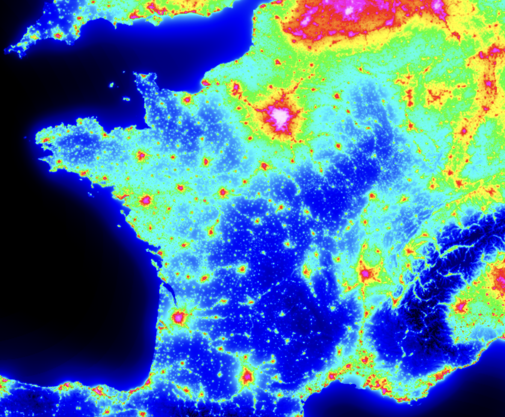
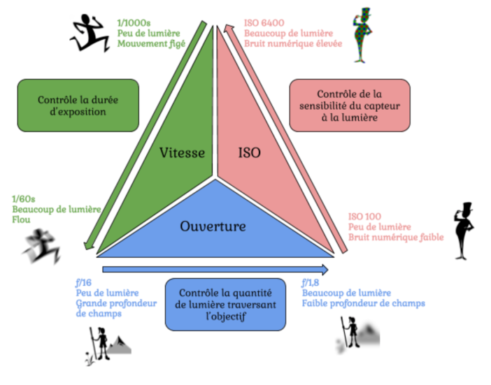

Mon timelapse des étoiles
Par où ça a commencé ?
Depuis que je suis jeune j’ai une fascination pour l’astronomie (
et pas l’astrologie 😤). Depuis mes premiers films de SF, comme Alien à l’époque, où Interstellar plus récemment (
ouais bon 2016 quand même). Pleins de questions dans la tête assez classiques, que je ne vais pas cité aujourd’hui...
On les entends partout ces questions
La préparation
Grâce à la vidéo d’un créateur de contenu que je suis depuis le collège je dirais, j’ai voulu me lancer. (
Lien de la vidéo en question)
Il me fallait donc pour commencer un appareil photo, ça tombe bien j’ai mon
Sony Alpha 5000 que j’utilise pour tout depuis mon séjour à Pékin en Chine pour mes études. Il fait le taff pour la plupart des choses que je voulais faire, ça sera donc aussi le cas pour l’astrophotographie 😋
Comme matos il est FORTEMENT conseillé d’avoir un trepied, bon c’est obligatoire quoi 😒. Pour ma part je vais utilisé le trepied que mon père m’a offert pour mon annif ça fera très bien l’affaire. Faut aussi installer une appli de timelapse sur mon appareil, parfaitement légalement biensûr
(une petite recherche sur google et ça le fait les gars 🤫)
De ce que dit Julien (ouais c’est mon pote je l’appelle
Julien, ou
Juju parfois) dans sa vidéo, il me faut un lieu sans pollution lumineuse et donc éviter les grandes villes comme Paris par exemple 👀
Il partage intéressant à ce propos :
ça se passe ici. En gros là où c’est rouge faut éviter, on vise plutôt le bleu en fait.

De plus, il faut check le calendrier lunaire, parceque, oui, la lune emmet de la lumière … Et nous on ne veut surtout pas ça, donc pareil faut check sur
ce site pour choisir la meilleure date possible.
Quand faut y aller, faut y aller
En mai 2023 j’ai été sur ma terre natale (ou presque) : La Réunion ! Et, quelle chance ! J’ai tout mon matos avec moi 😈
Oui vous avez compris, on va prendre des photos d’étoiles en étant sur une île dans l’océan indien à 10 000 kilomètres de chez moi.
Je prépare mon trépied, j’attends la bonne soirée, étoilée, sans nuages, sans lune. Je suis chez mon beau frère, il a une grande terrasse au niveau de la chambre, parfait, je vais pourvoir prendre 300 photos toute la nuit, sans déranger personne.
Hop, je met mon appareil sur mon trépied, mon trépied sur la barrière de la terasse, je vise le ciel… et puis … bah je sais pas en fait.
Bon je prends en photo le ciel dans un premier temps, et … nickel on voit super bien et puis… MAIS NON BIENSÛR QUE NON, ON VOIT RIEN !!! 🤬
Bon je décide de retourner sur la vidéo de Juju, et puis en fait il explique dans les grandes lignes les réglages du triangle d’exposition à avoir pour l’astrophotographie, pour vous la faire court, et aussi parceque j’ai la flemme j’avoue, voici une petite image explicative du triangle d’exposition :

Je vais pas paraphraser ce que dit le poto Julien dans sa vidéo, mais en gros pour moi ces réglages là m’ont donné un truc dans le genre :
euh alors je retrouve plus les photos de mon timelapse… je vous tiens au courant bisous
Une fois que j’avais une photo pas mal, j’ai configuré mon app et puis après environ 300 photos voilà le résultat :
Super expérience, en plus c’est vachement plaisant de voir le ciel et de prendre le temps de le regarder, évidemment ya de la post-production à prendre en compte, d’où le bleu. Mais la vidéo de Juju est vraiment bien faites, ça vaut le coup, si ça vous tente je ne peux que vous encourager.
Enjoy ✧
21 novembre 2023 - Par Vincent J.